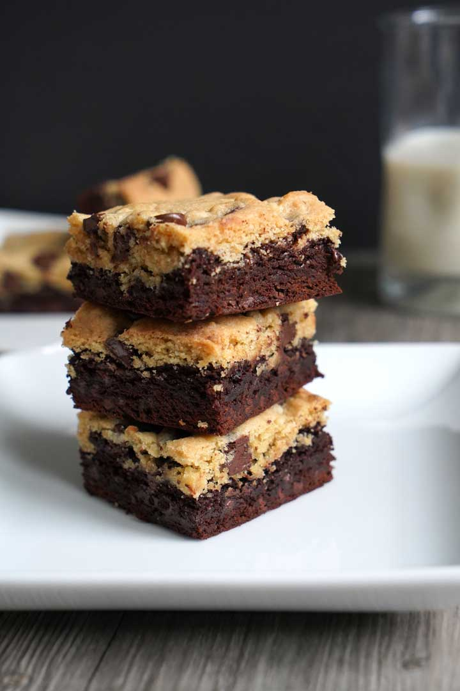
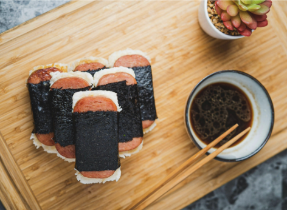

Brookies are the best street treat between two worlds cookies and brownies. Brookies were created by Jovon English, who created the combined dessert in 2014 after a breakup when she couldn't choose between cookies or brownies.
| Ingredient | Brownie Layer | Chocolate Chip Cookie Layer |
|---|---|---|
| Butter | 1/2 cup (melted) | 1/2 cup (softened) |
| Granulated Sugar | 1 cup | 1/4 cup |
| Brown Sugar | — | 1/2 cup (packed) |
| Eggs | 2 large | 1 large |
| Vanilla Extract | 1 tsp | 1/2 tsp |
| All-Purpose Flour | 1/2 cup | 1 1/4 cups |
| Unsweetened Cocoa Powder | 1/3 cup | — |
| Baking Powder | 1/4 tsp | — |
| Baking Soda | — | 1/2 tsp |
| Salt | 1/8 tsp | 1/2 tsp |
| Chocolate Chips | — | 1 cup |
Marvens - Rice and Beans
He really likes this dish because its from his native coountry and it really delicious.

| Ingrediens | Sides |
|---|---|
| Rice | Pikliz |
| Beans | bananas |
| Pork |
Kevin- SPAM Msubi
Spam musubi is a popular lunch food in Hawaii, made with grilled Spam on top of a block of rice, wrapped together with seaweed.
| Ingredient | Amount |
|---|---|
| Spam | 1 can |
| Cooked Rice | 2 cups |
| Seaweed | 1 sheets |
| Soy Sauce | 1 tbsp |